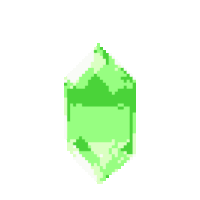
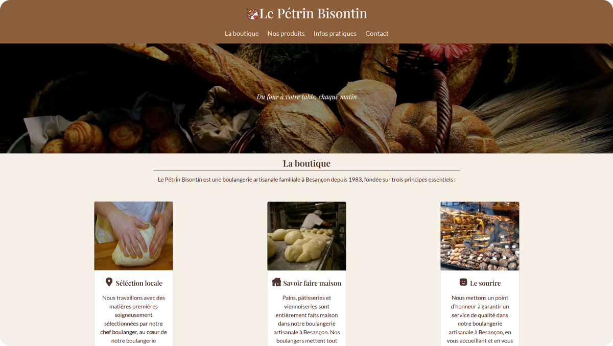
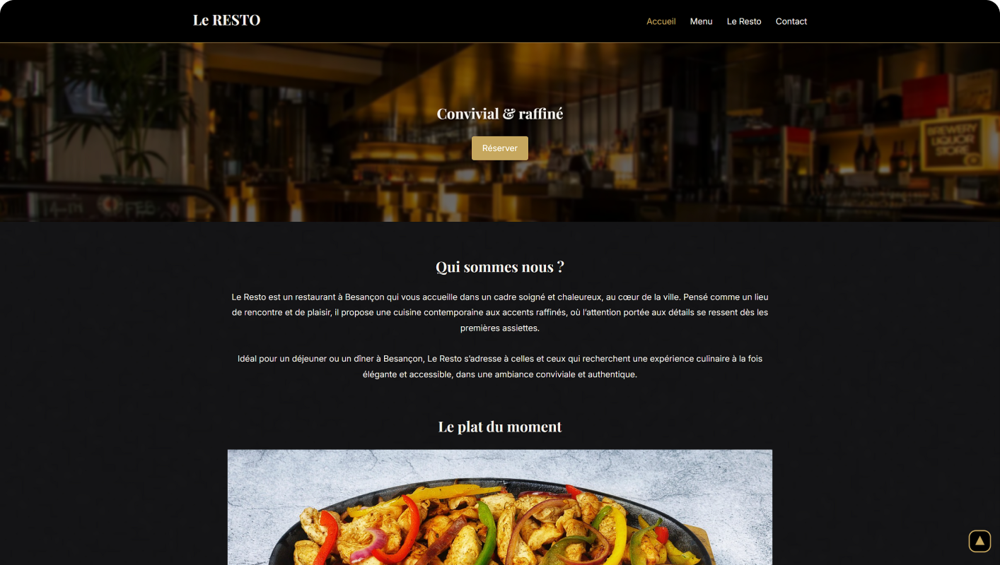

Mon Portfolio
Je construis au fur et à mesure voici ce que j'ai réalisé jusqu'ici. Des projets concrets, des clients réels pour certains. Chaque projet raconte une histoire différente.

Site vitrine simple (One Page)
Le pétrin Bisontin

Site vitrine one page réalisé pour une boulangerie artisanale fictive dans le cadre de ma formation. L'objectif était simple, une présence web claire et accessible pour un artisan local : les produits, les horaires, la localisation et un formulaire de contact. Un projet pensé pour les petits budgets qui veulent être visibles sur le web sans se ruiner.
Site vitrine multipage
Le Resto

Site vitrine multipage réalisé pour un restaurant fictif pour ajouter à mon portfolio. L'objectif était de créer une présence web élégante et appétissante : une carte en ligne, les horaires, la localisation et un formulaire de réservation. Un projet qui m'a permis de solidifier mes bases en HTML, CSS et JavaScript vanilla.
Refonte WordPress
Aurélie Drouhot
Refonte complète du site WordPress d'Aurélie Drouhot, dessinatrice-projeteuse et conceptrice d'espaces basée près de Besançon. La mission comprenait une modernisation visuelle du site, une restructuration des pages et l'ajout de nouveaux contenus. Mon premier vrai client.
Application SaaS
Clotho

Clotho est mon projet le plus ambitieux. Une application web de gestion de campagnes de jeux de rôle déployée en production sur clotho.fr. Personnages, quêtes, bestiaire, lore, notes personnelles : tout est centralisé dans une interface sombre et immersive. Un projet personnel encore en développement actif, que je compte commercialiser en freemium.
Vous êtes intéressé par mon travail ?
Contactez-moi pour discuter de votre projet !
Me contacter